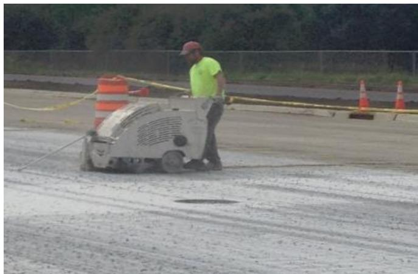
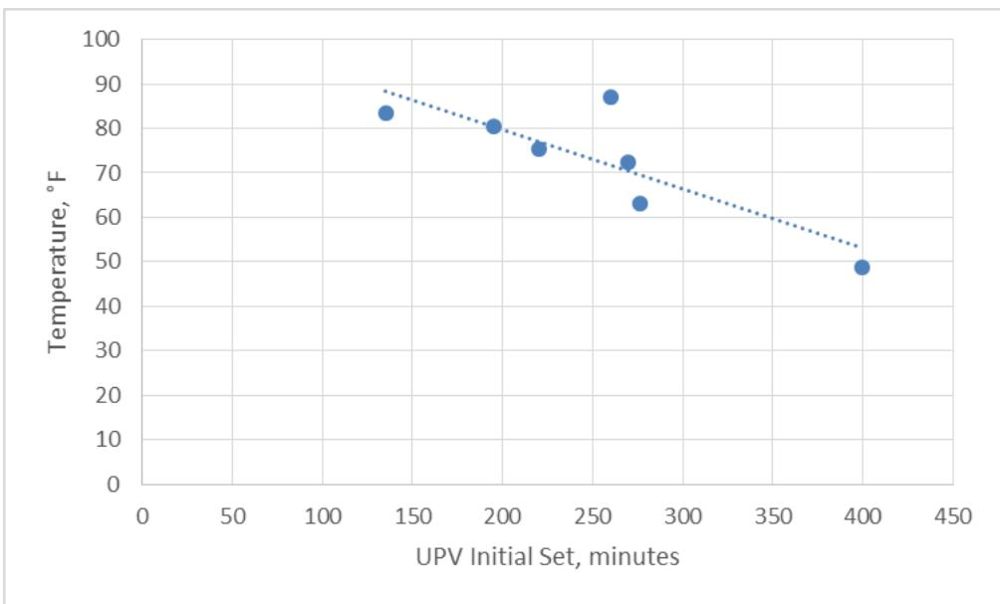
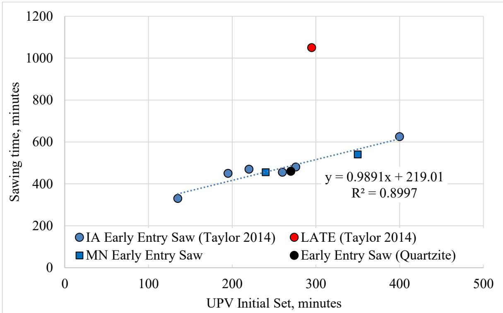
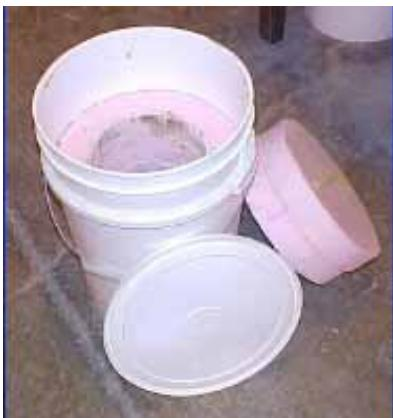
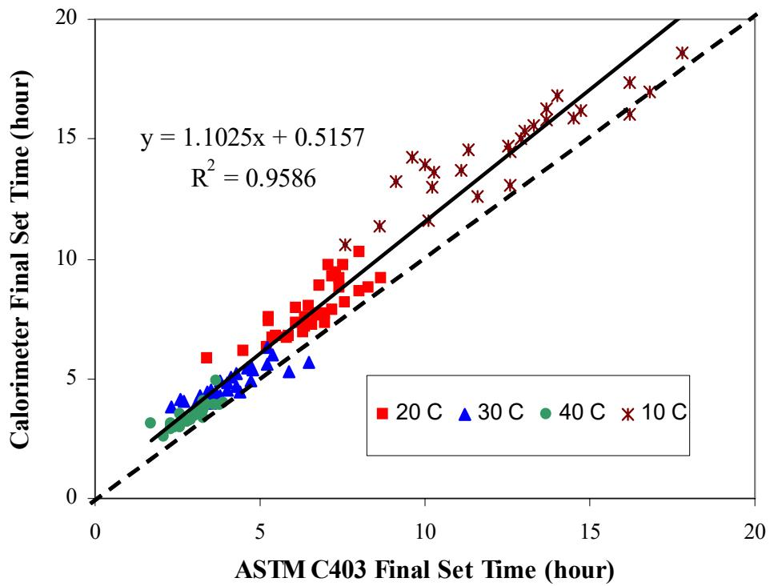
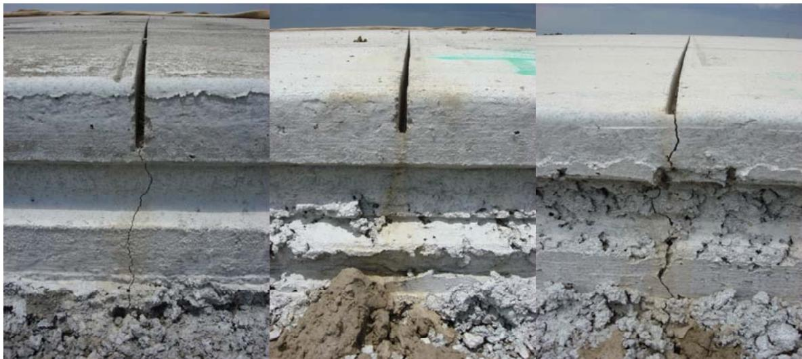
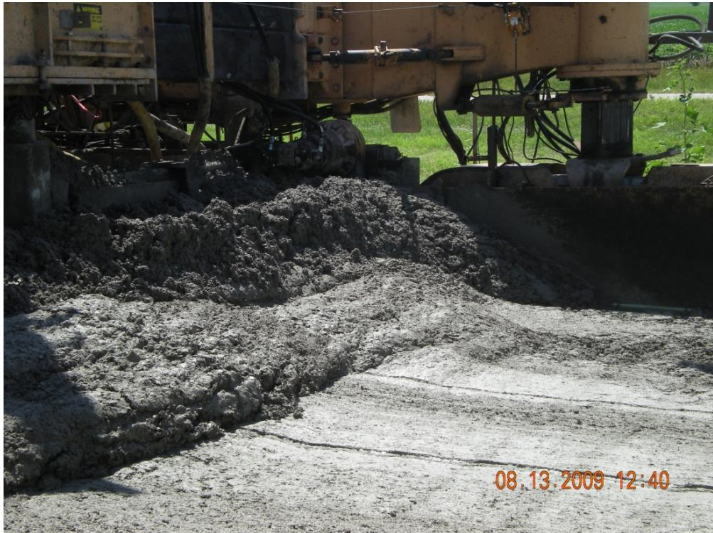
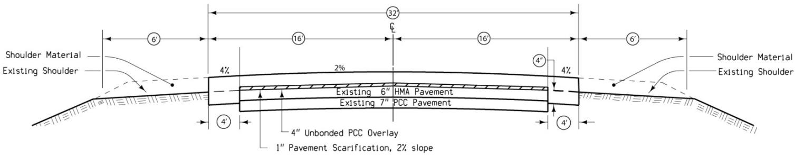

Sawing Window
The Sawing Window is a critical construction phase for installing Concrete Pavement Joints, defined as the specific time interval between concrete placement and cutting [4]. This period typically spans 12 to 18 hours after finishing, starting after Initial Set and before drying begins, to ensure the concrete gains sufficient strength to prevent raveling while avoiding tensile stresses that cause random cracking if sawing is delayed [4][2]. During this window, saw cuts should be conducted on freshly placed concrete pavement joints; however, Early entry sawing (with a protective shoe) can begin slightly earlier than conventional sawing [1].
Sources (10)
Introduction to Sawing Windows
Early entry sawing is typically performed using lightweight equipment at an age of 1 to 4 hours after paving, cutting a shallow notch approximately 1.0 to 1.5 inches deep. [2]
 Contrast in joints with different saw cut depths [2]
Contrast in joints with different saw cut depths [2]

A typical early entry saw-cutting process [1]Factors Influencing Setting and Sawing Time
The sawing window is governed by several factors, including the rate of hydration—the same factor that influences initial set—and the hardness of coarse aggregate, which affects cutting difficulty but did not systematically shift the UPV-sawing correlation in Taylor & Wang 2015 [3]. Harder aggregates, such as quartzite, do not systematically shift the correlation between UPV measurements and sawing times compared to softer aggregates like limestone, suggesting that aggregate hardness affects cutting difficulty but does not alter the fundamental setting-to-sawing relationship [3]. Ambient temperature also plays a critical role; higher temperatures shorten the elapsed sawing time, with a steeper slope for conventional sawing (−11.1 min/°F) versus early entry (−5.6 min/°F). Variations in setting times are primarily driven by the temperature of the concrete mixture rather than other factors, as higher mixture temperatures accelerate hydration and thereby shorten the elapsed time to reach the required saw strength [3]. Furthermore, the timing of paving affects the sawing window because morning pours experience higher maximum temperatures, greater solar radiation, and consequently shorter windows for cutting compared to afternoon paving [4]. The window eventually closes when drying begins, a process influenced by hydration and environmental exposure [1]. Empirical data indicates that for early entry sawing, cutting should commence approximately 220 minutes after initial set is observed, as the rate of hydration remains similar across mixtures once it begins; this constant time interval applies regardless of the specific initial set duration [3].

Comparison of setting and average air temperature [3]Environmental and structural conditions further influence pavement integrity and sawing requirements. In cooler weather, concrete overlays can set from the bottom up, which delays the sawing window; temporarily covering the overlay with plastic after paving helps the concrete set properly to allow for timely sawing [5]. To prevent cracking caused by nighttime contraction of the underlying pavement during cool-weather paving, specifying a minimum overlay mix temperature of 65°F ensures the overlay reaches saw strength before the existing pavement contracts [5]. Additionally, stabilized bases create higher friction between the concrete layer and subbase compared to granular bases, increasing tensile stress from bond restraints and potentially leading to inadequate effective saw cut depth for crack control [4]. These stresses are relevant given that the theoretical free expansion of a 20-foot PCC slab due to daily temperature differences ranges between 0.011 and 0.033 inches [2].
 Factors affecting the extent of longitudinal cracking: (a) weather conditions, (b) types of base course, (c) slab thickness, (d) slab width, and (e) concrete strength [4]
Factors affecting the extent of longitudinal cracking: (a) weather conditions, (b) types of base course, (c) slab thickness, (d) slab width, and (e) concrete strength [4]
Consequences of Incorrect Timing
Improper timing of sawing operations can lead to significant structural issues; sawing too early results in raveling, characterized by rough cut edges and aggregate pullout, while sawing too late causes random cracking as uncontrolled cracks develop before joints are cut [1]. Both of these outcomes lead to disputes, slab replacement, and increased costs [1]. To mitigate these risks, sawing operations must maintain a pace similar to paving, as sawing that lags significantly behind the paver due to insufficient equipment or staff increases the risk of random cracking even if initial set timing is correct [3]. Additionally, worn saw blades must be avoided during operations because they cause inconsistent cutting depths that can induce uncontrolled cracking in the pavement [4].
Predicting Sawing Times via UPV and Calorimetry
Heat signature curves derived from calorimetry can identify incompatibility problems between cementitious materials and admixtures, which is critical when unexpected changes in material suppliers or batch compositions occur [6]. Within this context, the maximum of the first derivative of the semi-adiabatic temperature curve is correlated to final set, while the maximum of the second derivative is correlated to initial set [7]. Furthermore, calorimetry tests can be utilized as an input parameter within the HIPERPAV II software to predict early-age pavement strength and stress development, thereby improving the reliability of performance analysis for concrete pavements [6].
 Effect of curing temperature on heat of hydration (Type I cement) [7]
Effect of curing temperature on heat of hydration (Type I cement) [7]
The UPV method utilizes p-waves (compression waves) rather than s-waves because they are less sensitive to sample-transducer contact issues and provide a higher signal-to-noise ratio for accurate velocity determination [3]. In this method, initial set is identified as the specific moment when the sound velocity begins to increase, which coincides with hydration products starting to interact [3]. Taylor & Wang 2015 established regression equations for saw time based on this method: for early entry, saw time = 0.99 × UPV initial set + 219 (R² = 0.90), and for conventional applications, saw time = 1.24 × UPV initial set + 273 (R² = 0.85) [1]. Additionally, mixtures containing higher fly ash dosages require calibration of predicted sawing times because the slow hydration rates associated with fly ash delay the onset of saw strength, particularly in cooler conditions [8].

(a). Early entry sawing time versus initial set from UPV measurements [1]Practical Field Implementation and Calibration
Contractors can develop a site-specific correlation by:
- Using traditional approaches for the first day or two
- Recording UPV initial set times and actual sawing times
- Building a correlation curve for the specific materials
- Using the curve to predict sawing time for the remainder of the project [1]
 (b). Conventional sawing time versus initial set from UPV measurements [1]
(b). Conventional sawing time versus initial set from UPV measurements [1]
Field calorimetry testing serves as a process control tool to determine the suitability of specified concrete mixes for specific weather conditions, such as hot or cold seasons, allowing for adjustments in sawing and curing procedures. [6]

Lafarge basket test setup [6]The calorimetry test method is generally completed quicker than ASTM C 186, taking approximately 24 hours to finish. [7]

Comparison of the set times from ASTM C 403 and calorimetry tests [7]Alternative Joint Formation Methods
Early entry sawing joints typically exhibit delayed cracking compared to conventional methods, with an average crack initiation time of 12.3 days versus 0.6 days for one-third depth and 2.2 days for one-quarter depth conventional cuts [2]. Consequently, the deformation at early entry saw joints ranges from 0.0055 to 0.0622 inches, which is significantly higher than the 0.0012–0.0410 inch range observed in one-quarter depth conventional cuts [2]. Alternatively, the sawing window can be bypassed entirely by using embedded metal strips or plastic assemblies that induce transverse joints during paving, eliminating the need for post-placement cutting [9]; these joint-forming devices are typically secured with wire ties at 305 mm (1-foot) intervals to prevent rollover when concrete is placed by a slipform paver [9].

Joints with different sawing depths in the test sections [2]Regarding placement and installation, minimizing the head of concrete in front of the paver helps prevent issues when anchoring dowel baskets [5]. Furthermore, installation of expansion joints in an overlay can be accomplished after placement by making two full-overlay-depth saw cuts located one inch apart at a contraction joint near an existing expansion joint, then replacing the inch of concrete with expansion material [5].

– SD Route 50 Concrete Head In Front of the Paver [5]Design Parameters for Ultrathin Overlays
In designs for unbonded overlays over concrete, enhancing final overlay performance is achieved by correcting irregularities in cross-slope and profile through varying the thickness of concrete rather than the depth of the asphalt bond breaker [5]. For unbonded overlays over concrete in non-arid climates, providing a positive drainage path for surface moisture to exit the interlayer bond breaker is necessary to prevent interlayer erosion under heavy traffic loadings [5].

– US 18 Unbonded Concrete Overlay Improvement [5]Regarding ultrathin Portland cement concrete overlays less than 3.5 inches thick, early entry sawing to a depth of T/3 or 1.5 inches is required to control cracking in the thin section [10]. In these ultrathin overlay applications, longitudinal and transverse contraction joints are typically spaced at 4-foot intervals in both directions [10]. While the maximum spacing for transverse and longitudinal joints in feet should not exceed twice the overlay depth in inches for normal concrete mixes, larger spacing can be considered when specific fibers are included [10].
Sawing Depth Specifications
Sawing depth is typically specified as a fraction of slab depth (D), with field experience indicating that cuts between 1/4 D and 1/3 D provide effective cracking control in most circumstances. However, early-age sawing at depths less than 1/4 D has been observed to yield better crack control compared to the conventional 1/4 D to 1/3 D range. [4]
Related
References
- P. Taylor and X. Wang, "Comparison of Setting Time Measured Using Ultrasonic Wave Propagation with Saw-Cutting Times on Pavements," National Concrete Pavement Technology Center, Ames, IA, Rep. TR-675, 2015. [Online]. Available: https://www.intrans.iastate.edu/wp-content/uploads/2018/03/PCC_setting_time_and_joint_sawing_w_cvr.pdf
- K. Wang, J. Hu, F. Bektas, P. Taylor, and H. Ceylan, "Crack Development in Ternary Mix Concrete Utilizing Various Saw Depths," National Concrete Pavement Technology Center, Ames, IA, Rep. TR-587, 2009. [Online]. Available: https://publications.iowa.gov/19999/1/IADOT_tr_587_Crack_Development_Ternary_Mix_Concrete_Saw_Depths_February_2009.pdf
- P. Taylor and X. Wang, "Concrete Pavement MDA: Comparison of Setting Time Measured Using Ultrasonic Wave Propagation With Saw-Cutting Times on Pavements in Iowa," National Concrete Pavement Technology Center, Ames, IA, Rep. TPF-5(205), 2014. [Online]. Available: https://www.intrans.iastate.edu/research/completed/comparison-of-setting-time-measured-using-ultrasonic-wave-propagation-with-saw-cutting-times-on-pavements-in-iowa/
- H. Ceylan, S. Kim, Y. Zhang, S. Yang, O. Kaya, K. Gopalakrishnan, and P. Taylor, "Prevention of Longitudinal Cracking in Iowa Widened Concrete Pavement," Institute for Transportation, Ames, IA, Rep. TR-700, 2018. [Online]. Available: https://www.intrans.iastate.edu/wp-content/uploads/2018/07/longitudinal_cracking_prevention_in_widened_concrete_pvmt_w_cvr.pdf
- G. Fick and D. Harrington, "Concrete Overlay Field Application Program, Final Report: Volume I," National Concrete Pavement Technology Center, Ames, IA, 2012. [Online]. Available: https://apps.itd.idaho.gov/apps/manuals/Materials/Materials%20References/OverlayFieldAppFinalReport.pdf
- K. Wang, Z. Ge, J. Grove, J. M. Ruiz, and R. Rasmussen, "Developing a Simple and Rapid Test for Monitoring the Heat Evolution of Concrete Mixtures (Phase 3)," CTRE, Iowa State University, Ames, IA, Rep. FHWA Project 17 (Phase I), 2006. [Online]. Available: https://www.intrans.iastate.edu/wp-content/uploads/2018/03/CalorimeterReportPhaseIII.pdf
- K. Wang, Z. Ge, J. Grove, J. M. Ruiz, R. Rasmussen, and T. Ferragut, "Simple and Rapid Test for Monitoring the Heat Evolution of Concrete Mixtures, Phase 2," Center for Transportation Research and Education, Ames, IA, 2007. [Online]. Available: https://www.intrans.iastate.edu/wp-content/uploads/2018/03/calorimeter.pdf
- X. Wang, P. Taylor, and D. King, "Evaluation of Modified Concrete Mixture Proportions for the City of West Des Moines," National Concrete Pavement Technology Center, Ames, IA, 2016. [Online]. Available: https://www.intrans.iastate.edu/wp-content/uploads/2018/03/WDM_modified_concrete_mixture_proportions_w_cvr.pdf
- J. K. Cable, J. Williams, B. L. Shearer, S. Reinert, and R. Steffes, "Evaluation of Transverse Joint Forming Methods for PCC Pavement," CTRE, Iowa State University, Ames, IA, Rep. TR-532, 2006. [Online]. Available: https://www.intrans.iastate.edu/wp-content/uploads/2018/03/transverse_joint.pdf
- J. K. Cable and J. Williams, "Evaluation of Unbonded Ultrathin Whitetopping of Brick Streets," CTRE, Iowa State University, Ames, IA, Rep. TR-466, 2006. [Online]. Available: https://www.intrans.iastate.edu/wp-content/uploads/2018/03/whitetopping.pdf
Feedback on this page